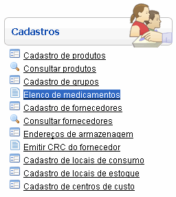
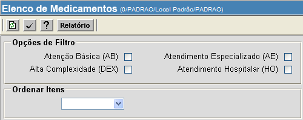

Elenco de Medicamentos [ Voltar ]Utilize este formulário para visualizar uma listagem de medicamentos existentes. A pesquisa pode se restringir a medicamentos de atenção básica, alta complexidade e atendimentos especializado e hospitalar.O formulário "Elenco de medicamentos" encontra-se dentro do menu "Cadastros". 
Após clicar no nome do formulário, o sistema abrirá a seguinte tela: 
1º Passo: informe os dados da pesquisa que deseja efetuar. Na seção "Opções de Filtro", marque com um clique nas opções que deseja visualizar nos resultados. Em "Ordenar Itens", selecione a forma de ordenamento. 2° Passo: clique no botão  para processar
a pesquisa. para processar
a pesquisa.Se necessário, clique no botão  para
visualizar o relatório "Elenco de Medicamentos". para
visualizar o relatório "Elenco de Medicamentos". |